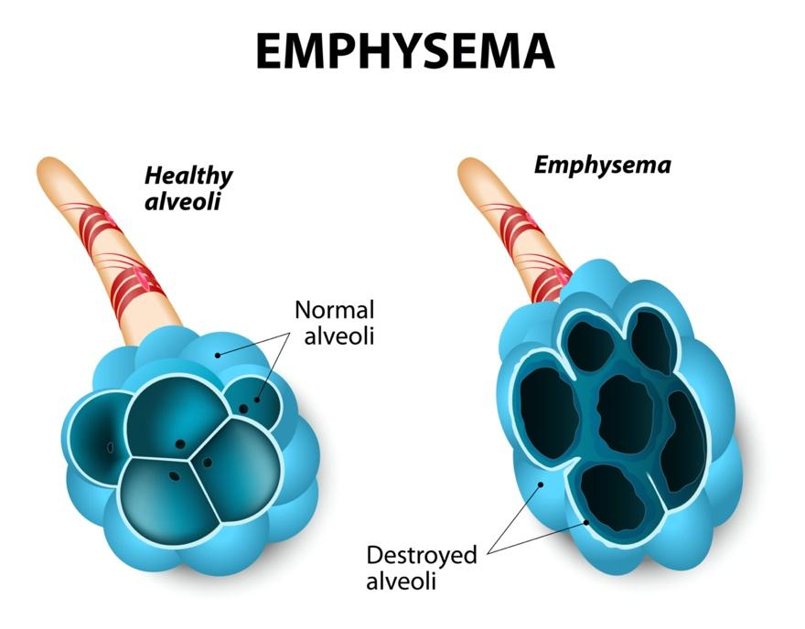

Emphysema is a long-term lung disease. It happens when the tiny air sacs in your lungs, called alveoli, get damaged. These air sacs help move oxygen into your blood. When they are damaged, it becomes harder to breathe.

Emphysema is a kind of chronic obstructive pulmonary disease, commonly called COPD.
Apart from a lung transplant, there is no cure for it. However, the right care can help you breathe easier and live better.
Living with emphysema can be hard at times, but you are not alone. Many people manage their symptoms and live full lives. Let your care team know how you feel. Support groups and counseling can also help.
The most common cause of emphysema is smoking. Other causes include:
Breathing in secondhand smoke
Long-term exposure to air pollution or dust
A rare condition called alpha-1 antitrypsin deficiency that is inherited from family
In developing countries, people often get emphysema by breathing smoke from burning fuel in homes with poor airflow.
Emphysema symptoms often start slowly and get worse over time. You may notice:
Shortness of breath, especially during activity
A cough that will not go away
Wheezing, a whistling sound when breathing
Feeling tired
Tightness in your chest
Losing weight without trying
To find out if you have emphysema, your care team:
Asks questions: Your care team asks about your symptoms and health history.
Does a physical exam: This includes listening to your lungs.
Checks your oxygen level with a finger sensor: They may also ask you to walk with the sensor on, to see if your oxygen level goes down when you are active.
Orders imaging tests: These could include a chest X-ray or CT scan.
Uses breathing tests: These are called pulmonary function tests. They include spirometry, a test in which you blow into a tube. It measures how much air you can breathe out and how fast. Other tests check how much air your lungs can hold and how well they transfer oxygen into the body.
Your care team may refer you to a lung specialist for more testing or treatment.
Medicines and therapies can help you breathe better. Your care team may give you:
Inhalers: Medicine delivered by an inhaler can help open your airways and make breathing easier.
Steroids: These reduce swelling in the lungs. You may take steroids as pills or with an inhaler.
Antibiotics: If you have a lung infection, it can be treated with antibiotics. Make sure to finish all of them. If you stop early, the infection may not go away and can become harder to treat.
Oxygen therapy: If your oxygen level is low, your care team may give you oxygen.
Other medicines: Sometimes, other medicines may be given to help with anxiety, sleep, or other symptoms.
Lung reduction: Some people can be treated with surgery to remove the parts of the lungs with emphysema. This lets the rest of the lungs work better. A similar treatment that is not surgery involves putting valves into the lungs. The valves let air out of the parts of the lungs with emphysema, and new air cannot get back in.
Pulmonary rehab: A special program teaches you how to breathe better and stay active. It includes exercise, tips, and support.
Breathing exercises: This is like physical therapy for your lungs. You can also learn simple ways to help catch your breath, like pursed-lip breathing.
Quit smoking: The most important thing you can do is quit smoking. There are many different treatments and programs that can help. Your care team can work with you to choose the best option for you.
Eat healthy foods: A balanced diet gives your body energy to breathe and heal.
Drink fluids: Water helps keep mucus thin so you can cough it up more easily.
Wash your hands often: This helps prevent infections that can make breathing harder.
Avoid smoke and pollution: Stay away from smoky or dusty places to protect your lungs. Try to stay inside and use air conditioning when the outside air quality is poor.
Get your vaccines: Stay up to date on flu, COVID-19, and pneumonia shots.
Go slowly: Take breaks and rest when needed. Spread tasks out during the day.
Use a fan or air filter: These can help with indoor air quality.
Do gentle exercise: Gentle walking, stretching, or chair exercises can help keep your lungs and muscles strong. Ask your care team which exercises are safe for you.
Emphysema needs regular checkups to manage symptoms and prevent flare-ups. Your care team will:
Check your breathing regularly
Review your medicine and how to use inhalers
Talk with you about oxygen, rehab, or other treatments
Help you avoid hospital visits by catching problems early
Keep all follow-up appointments, even if you feel OK.
Call your care team if you:
Have shortness of breath that is getting worse or happens more often, even with daily activities like walking or getting dressed
Cough more than usual or have changes in your cough, like more mucus or mucus that is yellow, green, or has blood in it
Have swelling in your ankles, feet, or legs that is new or getting worse
Feel much more tired or weak than usual, or have trouble doing things you normally do
Need to use your inhaler or oxygen more often than usual
Have a fever of 100.4°F or 38°C or higher that does not go away with medicine
Have any questions or concerns about your symptoms or medicine
Get help right away if:
You have severe trouble breathing, especially if it is hard to talk or walk, or you struggle to catch your breath while resting.
You have chest pain or tightness that does not go away.
Your lips, face, or fingernails turn blue or gray.
You cough up a lot of blood.
You feel confused or very sleepy, or your family is having trouble waking you up.
You have a high fever with chills, shaking, or feeling very sick.
If you are not sure if your symptoms are serious, it is always safest to get emergency help. Emphysema can be dangerous, so do not wait if you feel much worse than usual.
Thank you for trusting us with your care. We are here to support you and want you to feel your best. Contact us with any questions.
IF YOU HAVE A MEDICAL EMERGENCY, CALL 911 OR GO TO THE EMERGENCY ROOM.
The information presented is intended for general information and educational purposes. It is not intended to replace the advice of your health care provider. Contact your health care provider if you believe you have a health problem.
Last updated May 2025
© 2025 Mytonomy, Inc. All rights reserved.